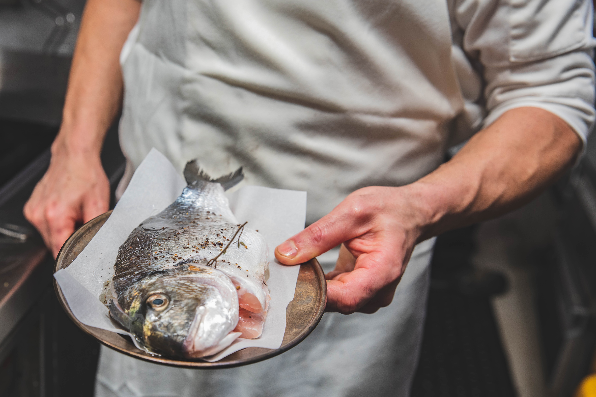

Below you will find a list of my favorite supplements with some great information about the supplement and how to use it.

These essential oils provide the brain cells with a coating that is necessary to keep them flexible. Omega 3s improve depression, bipolar, memory, and irritability, and also lower cholesterol and blood pressure. Most products don't have the right ingredients for mental health, so check the approved product list.
View More →A key antioxidant in the brain that works to prevent aging and damage to brain cells. Food sources include oats, broccoli, bananas, soy beans, and wheat germ. NAC works better than medication for compulsive hair-pulling, and also helps with skin-picking, acne, depression, memory, and a variety of addictions.
View More →
Sensoril is a specially formulated extract of an Indian form of ginseng (Ashwagandha, or Withania somnifera). It is one of few treatments that improves cognitive functioning in bipolar disorder — better short term memory, faster mental responses, sharper intuitive thinking, and improved growth in the hippocampus.
View More →Traditionally thought of as a scent or aromatherapy, lavender also comes in capsule form and helps anxiety and sleep. It is regularly prescribed in Germany as a medication for anxiety — a large study found the oral form twice as effective as a standard anxiety medication (paroxetine, Paxil).
View More →
Long used to improve nausea, and can be taken safely with psychiatric medications to reduce that side effect. Most ginger ale products do not have natural ginger in them, but effective sources of dietary ginger as well as aromatherapy and capsule forms are covered in the guide.
View More →
Probiotics are the healthy bacteria necessary to keep our gut healthy. Many take them for gastrointestinal health, and studies have found they can also reduce inflammation and anxiety — the brain and gut are connected, and a healthy gut is key for optimal mental health.
View More →